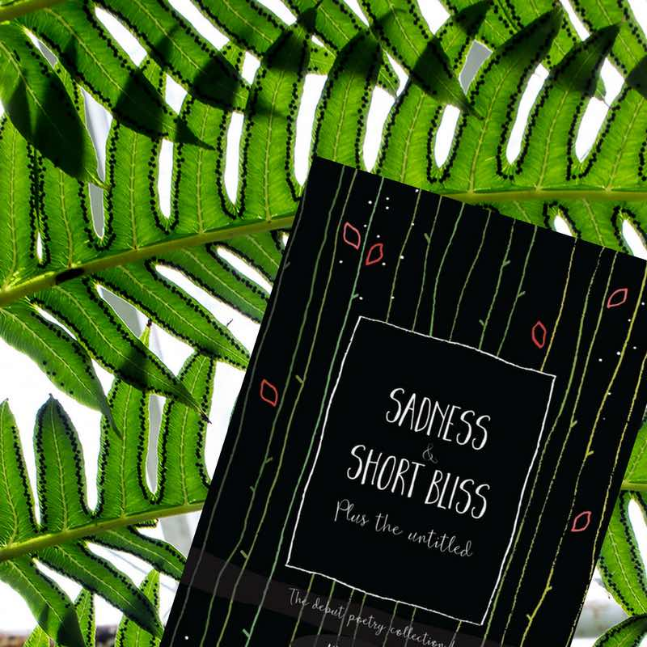

I'm Kyomi...
A fan of marketing, travel, writing and life. Learn more about these three areas of my life by journeying through this site.

Curious digital marketer afinity for user experience + analytics.

University of Kent literature graduate with 7+ creative writing experience.

Travelling deeper through travel writing + Wading Wade, a useful travel blog.

Sadness and Short Bliss
Sadness and Short Bliss is the debut poetry collection by Kyomi Wade out now. 51 poems spanning 7+ years, exploring the thoughts of a pensive young woman, growing up, falling in love, mourning loss, assigning emotions and making sense of the world.